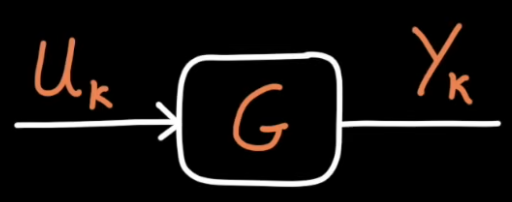
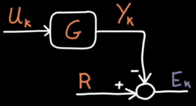

Consider a system (not the controller) to be controlled has the following dynamics in states based form:
$$\begin{align*}
x_{t+1} &= A x_t + Bu_t \\
y_{t+1} &= Cx_t
\end{align*}$$
The initial state:
$$
x_0 = 0
$$
Steps:
Input $u$ comes into the system at time $t$.
This generates an output $y$ at time $t$.
Iterations
Input and output across entire iterations can be packaged into 2 matrices:
$$
\newcommand{step}[1]{\scriptsize{t{#1}}}
Y_k = \begin{bmatrix}
y_{\step{+1}} \\
y_{\step{+2}} \\
\vdots \\
y_{\step{+N}}
\end{bmatrix} \quad
U_k = \begin{bmatrix}
u_{\step{}} \\
u_{\step{+1}} \\
\vdots \\
u_{\step{+N-1}}
\end{bmatrix}
$$
These capture whole sequence of inputs and outputs for one iteration denoted by $k$ where each iteration can have 1 to $N$ steps.
An input-output relationship can be derived as follows:
$$\begin{align*}
Y_k &= GU_k \\\\
G &= \begin{bmatrix}
CB & 0 & \cdots & 0 \\
CAB & CB & \cdots & 0 \\
\vdots & \vdots & \ddots & 0 \\
CA^{N-1}B & CA^{N-2}B & \cdots & CB
\end{bmatrix}
\end{align*}$$
For a SISO system with $N$ control actions per iteration G becomes an $N \times N$ matrix.

Block diagram form
Question
How does a sequence of hard-coded open loop inputs do at making the system follow some reference?

The output is compared to a reference signal. The difference between them is the error across the entire iteration $E_k$.